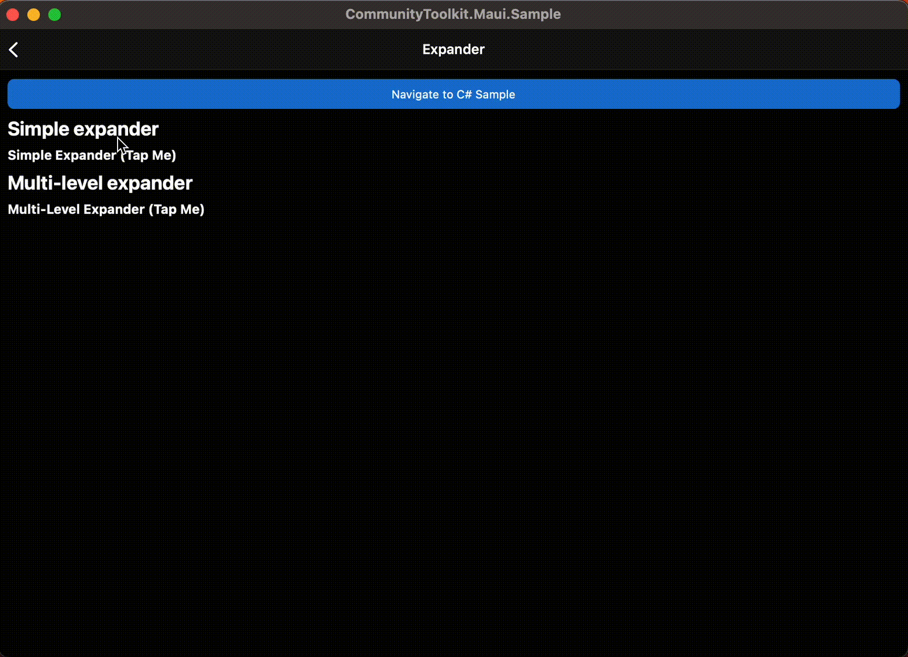

Expander
The Expander control provides an expandable container to host any content. The control has two main properties to store your content:
Header
This Header property can be provided with any view to allow for full customization. The Header will always be visible and interacting with it (clicking or tapping) will show/collapse the Content.
Note
It is not recommended to place controls inside the header that allow user interaction.
Content
This is the main content that will show when the Header property is interacted with it (clicked or tapped) or the IsExpanded property is modified.
Note
Expander may work unexpectedly if it is placed inside ListView or CollectionView. However, it can be controlled with the custom implementation by setting public Action<TappedEventArgs>? HandleHeaderTapped { get; set; }. This action is executed each time the header tapped. Please pay attention, by changing this action you may receive different behavior in CollectionView and ListView on all platforms.

Basic usage
The following examples show how to use the Expander view by setting the Header property to be a Label control and the Content to be a HorizontalStackLayout with an Image and a Label inside.
XAML
Including the XAML namespace
In order to use the toolkit in XAML the following xmlns needs to be added into your page or view:
xmlns:toolkit="http://schemas.microsoft.com/dotnet/2022/maui/toolkit"
Therefore the following:
<ContentPage
x:Class="CommunityToolkit.Maui.Sample.Pages.MyPage"
xmlns="http://schemas.microsoft.com/dotnet/2021/maui"
xmlns:x="http://schemas.microsoft.com/winfx/2009/xaml">
</ContentPage>
Would be modified to include the xmlns as follows:
<ContentPage
x:Class="CommunityToolkit.Maui.Sample.Pages.MyPage"
xmlns="http://schemas.microsoft.com/dotnet/2021/maui"
xmlns:x="http://schemas.microsoft.com/winfx/2009/xaml"
xmlns:toolkit="http://schemas.microsoft.com/dotnet/2022/maui/toolkit">
</ContentPage>
Using the Expander
The following example shows how to add an Expander view in XAML.
<toolkit:Expander>
<toolkit:Expander.Header>
<Label Text="Baboon"
FontAttributes="Bold"
FontSize="Medium" />
</toolkit:Expander.Header>
<HorizontalStackLayout Padding="10">
<Image Source="http://upload.wikimedia.org/wikipedia/commons/thumb/f/fc/Papio_anubis_%28Serengeti%2C_2009%29.jpg/200px-Papio_anubis_%28Serengeti%2C_2009%29.jpg"
Aspect="AspectFill"
HeightRequest="120"
WidthRequest="120" />
<Label Text="Baboons are African and Arabian Old World monkeys belonging to the genus Papio, part of the subfamily Cercopithecinae."
FontAttributes="Italic" />
</HorizontalStackLayout>
</toolkit:Expander>
C#
The following example shows how to add an Expander view in C#.
using CommunityToolkit.Maui.Views;
var expander = new Expander
{
Header = new Label
{
Text = "Baboon",
FontAttributes = FontAttributes.Bold,
FontSize = Device.GetNamedSize(NamedSize.Medium, typeof(Label))
}
};
expander.Content = new HorizontalStackLayout
{
Padding = new Thickness(10),
Children =
{
new Image
{
Source = "http://upload.wikimedia.org/wikipedia/commons/thumb/f/fc/Papio_anubis_%28Serengeti%2C_2009%29.jpg/200px-Papio_anubis_%28Serengeti%2C_2009%29.jpg",
Aspect = Aspect.AspectFill,
HeightRequest = 120,
WidthRequest = 120
},
new Label
{
Text = "Baboons are African and Arabian Old World monkeys belonging to the genus Papio, part of the subfamily Cercopithecinae.",
FontAttributes = FontAttributes.Italic
}
}
};
C# Markup
using CommunityToolkit.Maui.Views;
Content = new Expander
{
Header = new Label()
.Text("Baboon")
.Font(bold: true, size: 18),
Content = new HorizontalStackLayout
{
new Image()
.Source("http://upload.wikimedia.org/wikipedia/commons/thumb/f/fc/Papio_anubis_%28Serengeti%2C_2009%29.jpg/200px-Papio_anubis_%28Serengeti%2C_2009%29.jpg")
.Size(120)
.Aspect(Aspect.AspectFill),
new Label()
.Text("Baboons are African and Arabian Old World monkeys belonging to the genus Papio, part of the subfamily Cercopithecinae.")
.Font(italic: true)
}.Padding(10)
}.CenterHorizontal();
Properties
| Property | Type | Description |
|---|---|---|
Command |
ICommand |
Executes when the Expander header is tapped. |
CommandParameter |
object |
The parameter that's passed to Command. |
Direction |
ExpandDirection |
Defines the expander direction. |
Content |
IView? |
Defines the content to be displayed when the Expander expands. |
Header |
IView? |
Defines the header content. |
IsExpanded |
bool |
Determines if the Expander is expanded. This property uses the TwoWay binding mode, and has a default value of false. |
The ExpandDirection enumeration defines the following members:
| Value | Description |
|---|---|
Down |
Indicates that the Expander content is under the header. |
Up |
Indicates that the Expander content is above the header. |
The Expander control also defines a ExpandedChanged event that's fired when the Expander header is tapped.
ExpandedChangedEventArgs
Event argument which contains Expander IsExpanded state.
Properties
| Property | Type | Description |
|---|---|---|
| IsExpanded | bool |
Determines if the Expander is expanded. |
Examples
You can find an example of this feature in action in the .NET MAUI Community Toolkit Sample Application.
API
You can find the source code for Expander over on the .NET MAUI Community Toolkit GitHub repository.